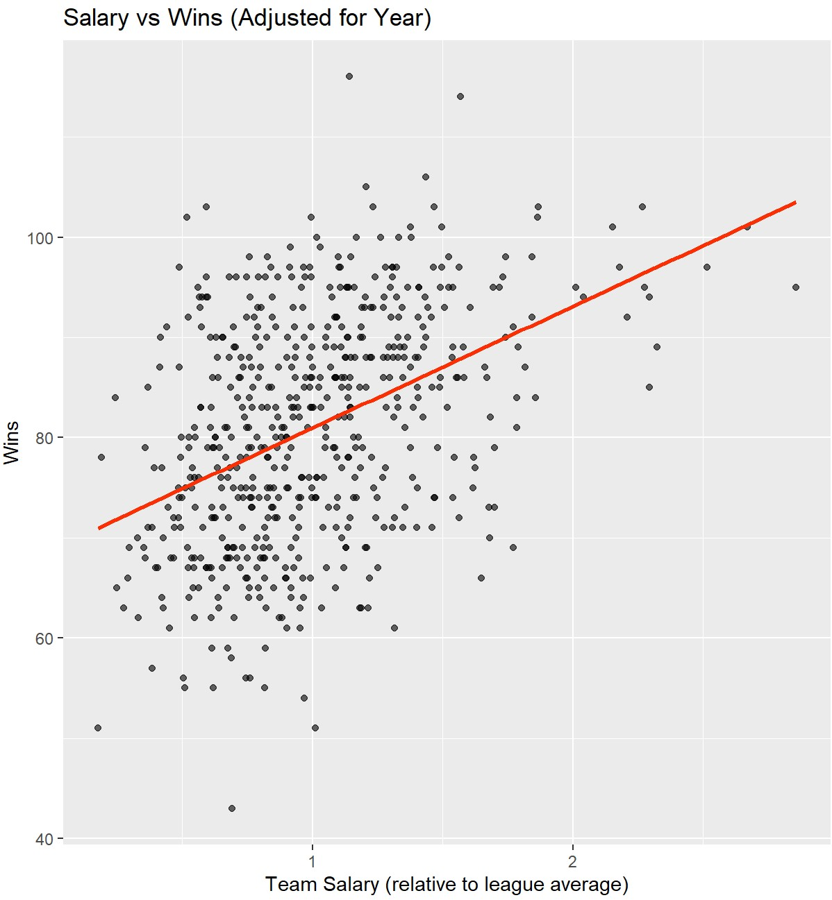
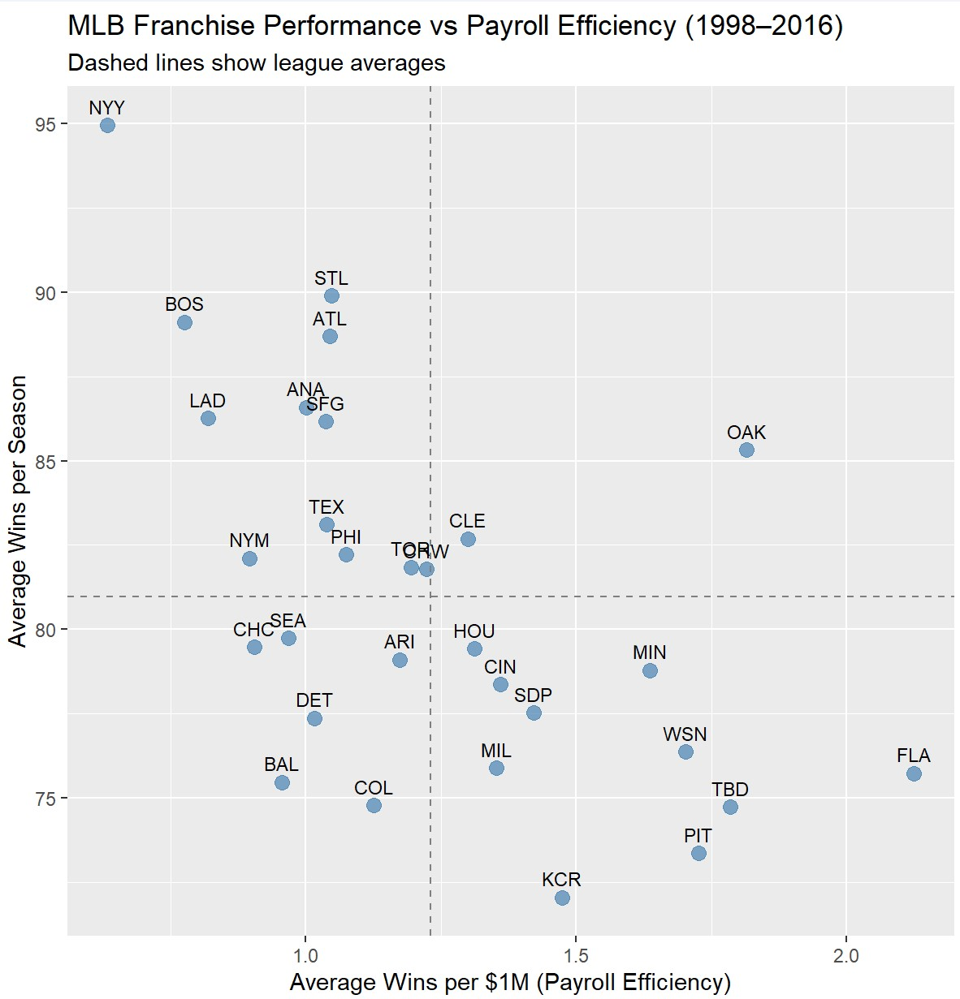

From a young age, baseball has always been my favorite sport. I can remember in my childhood being obsessed with baseball cards and their respective stats. They were my prized possessions, and while kids my age would typically go to the toy aisle in stores, I would always go to the baseball card sections. I would even go as far as stealing my brother’s cards. To this day, I attribute my obsession with baseball cards to my decision to major in statistics.
In my junior year of high school, I was assigned to do a book report from a select number of titles. None of the titles particularly appealed to me, however at the end of the shelf, the cover of a book caught my attention: Moneyball. The story of the Oakland Athletics and their process of trying to win despite having such a low budget to work with intrigued me. From learning this story, my fascination with sports analytics started, specifically with Sabermetrics. Because of my love for this story and the recent success of the spending spree Dodgers, I wanted to see if spending more money would lead to more wins, and which teams use their payroll most efficiently. The Lahman database was a great resource to test this.
As I was gathering information and looking through the database, I realized that salary information for each player was only available up to the 2016 season. I wanted to go to the current year, but we will work with the data we have been given. With the starting year, I wanted to make sure all 30 teams were included, so I ended up beginning in 1998, the year the MLB expanded to 30 teams. This gives nearly 20 years of data to see if spending leads to winning, and if it’s more important to spend more or spend efficiently.

Graph showing the relationship between wins and team salary relative to the league average.To do this, I calculated the team’s total salary for a given year by combining the individual player data by team and each season. With this dataset, I created a graph to see if there was a relationship between salary and wins. With just the given data, there wasn’t a great relationship, although there was a slight linear trend. I then thought about how inflation and rise in payroll over the two decades was not accounted for. So I created another graph with reference to a team’s salary respective to league average. This showed a better representation that teams who spend more than league average tend to have more wins.
The analysis was kind of what I expected, but I wanted to learn more. As a Rangers fan, whose team has been one of the top spending teams the past 4 years, yet have only made the playoffs once in that span, I wanted to see whether spending more simply buys wins, or if smart spending matters more. To do this I calculated each team’s “efficiency rating”, or wins per $1 mil spent. I then calculated each team’s average efficiency rating and created a graph that I found to be quite intriguing.
The teams with the highest efficiency in the way they spend are all small market teams, while those that are the least are big market teams. Teams with higher payrolls do tend to win more games, but they do so less efficiently. Large market teams such as New York and Boston win more games on average because they spend more, typically on better players, thus they are buying certainty, not efficiency. Very few teams manage to combine above average wins with above average efficiency. This suggests that sustained success is expensive. Small market teams can’t afford mistakes and must use every dollar wisely. They rely on young stars on rookie deals, as well as breakout players. Moneyball works precisely because inefficiencies exist.

Graph depicting Average Wins per Season for each Team according to their Payroll. i.e. How effective are these teams at spending money.Overall, this analysis shows that while higher payrolls are generally associated with more wins, they do not guarantee success and come at the cost of efficiency. Large market teams tend to buy stability and competitive certainty by spending more, while small market teams try to maximize efficiency by being smart with who they spend their money on, relying on player development and undervalued talent. Ultimately winning in baseball depends not only on how much a team spends, but also how effectively they translate payroll into performance.